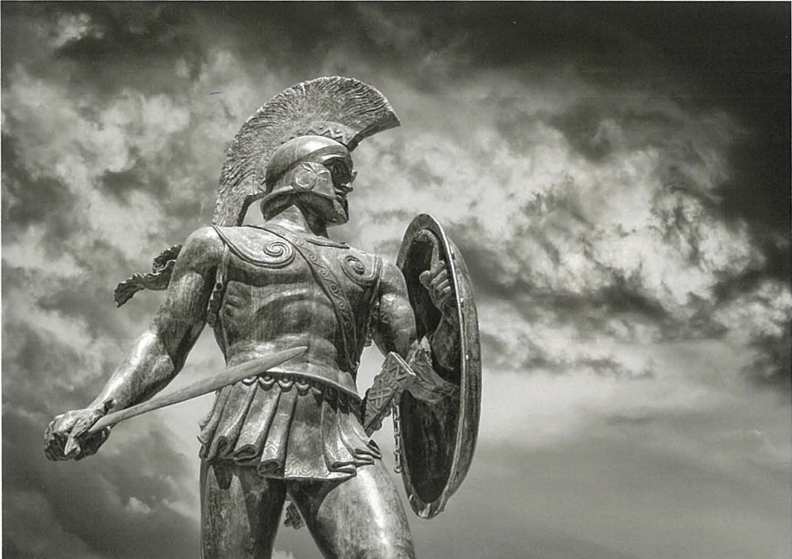
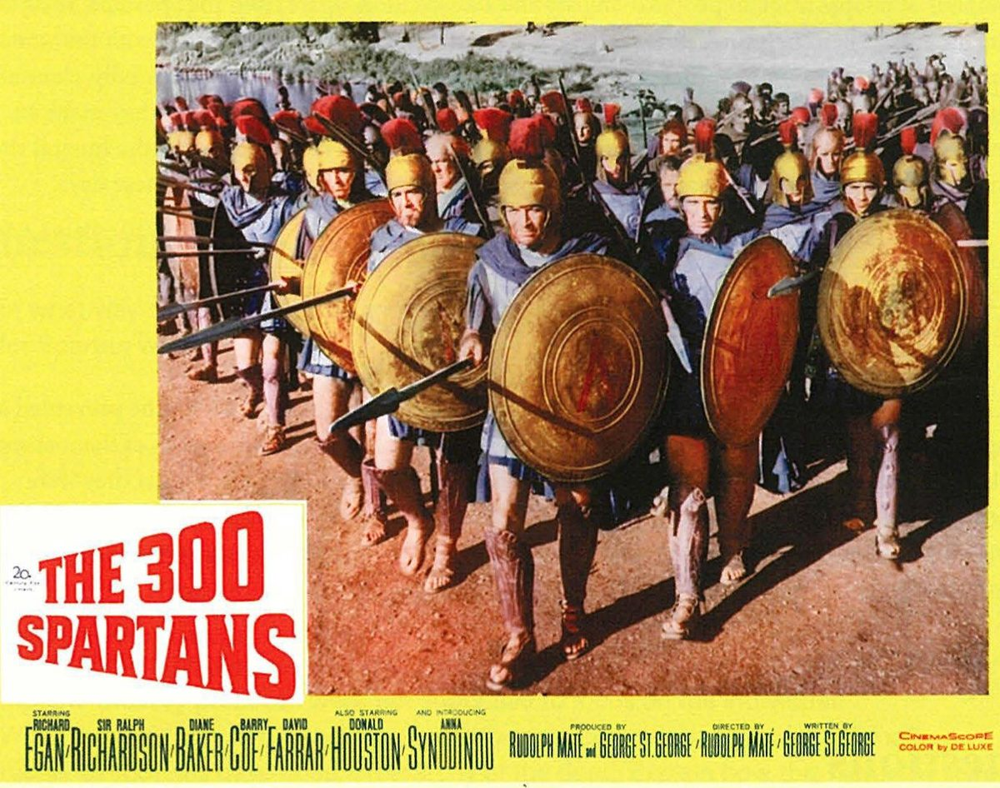

Spartan society to the Battle of Leuctra 371 BC · Lesson 32
Consolidation: one system, and its legacy
How did Sparta’s features depend on each other — and how has Sparta been remembered and reinvented since?
Year 12 Ancient History · Section II, Option G · Present with → or space · Read on a phone with R

Whole-unit retrieval quiz · 15 minutes for all 20 · from memory, no notes
Twenty questions on the whole unit: 1–10
- 1Thucydides imagined Sparta’s ruins: a city that is “simply a collection of” what? Villages — Thucydides 1.10.2 (Cooley G2) L2
- 2Under the rider to the Great Rhetra, who could dissolve the assembly if it adopted a “crooked proposal”? The elders and the founder-leaders (the kings) — Plutarch, Lykourgos 6 (Cooley D48) L3
- 3How many ephors were elected each year? Five — Cooley, introduction to D16–D21 L6
- 4After the quarrel between Cleomenes and Demaratus, how many kings could go out with an army? One — Herodotus 5.75 (Cooley D6) L4
- 5What did Cinadon say his aim had been? “To be no one’s inferior in Lakedaimon.” — Xenophon, Hellenika 3.3.11 (Cooley E53b) L7
- 6What was the title of the official in charge of the boys’ education? The paidonomos (“boy-herd”) — Xenophon (Cooley D74) L9
- 7Into how many regiments (morai) does Xenophon say the army was divided? Six — Xenophon, Constitution of the Lakedaimonians 11.4 (Cooley D88) L11
- 8Who made a formal declaration of war on the helots when they took office? The ephors — Aristotle, reported by Plutarch, Lykourgos 28 (Cooley D44) L12
- 9How much of the land does Aristotle say was owned by women? “almost two-fifths” — Politics 1270a (Cooley D54) L14
- 10What did Cynisca win at Olympia? The chariot race — her victory monument (Cooley C55) and Pausanias (C56) L14
Whole-unit retrieval quiz · questions 11–20
Twenty questions on the whole unit: 11–20
- 11Which inscription lists gifts of money to the Lacedaemonians “for the war”? The Spartan war fund inscription (Cooley B12) L18
- 12Name Sparta’s three great festivals of Apollo. The Karneia, the Hyakinthia and the Gymnopaedia — Cooley, introduction to C61–C94 L21
- 13According to Plutarch, how long could mourning last? Eleven days — Lykourgos 27.2 (Cooley B35b) L22
- 14In what material is the 7th-century BC lion from the sanctuary of Artemis Orthia carved? Ivory — Cavanagh’s introduction in Cooley, Figure 1 L24
- 15Who wrote of the Hyakinthia, “No one misses the festival”? Polycrates, quoted by Athenaeus (Cooley C69) L21
- 16Where is the Menelaion? At Therapne, on high ground east of the Eurotas, south-east of the town (Cooley, introduction to C29–C31) L2L25
- 17Which poet wrote maiden-songs for choruses of Spartan girls? Alcman — fragment 1 (Cooley A14) L13L26
- 18Plutarch says Spartan marriages “take the form of a kind of” what? Kidnapping — Lykourgos 15 (Cooley D71) L27
- 19Which Theban commander planned the victory at Leuctra in 371 BC? Epaminondas — Diodorus says he won “through his own generalship” (Cooley E108); Plutarch calls him “the Boiotarch” (E110) L28
- 20What Greek word means a shortage of citizen manpower? Oliganthropia — Aristotle, Politics (Cooley D28) L28
Score yourself out of 20. Circle the two topics you missed first: they start your revision plan (slide 24).
Learning intentions and success criteria · 2 minutes
Today’s goals
- explain how the features of Spartan society were interrelated
- explain how Sparta has been remembered and reinvented since 371 BC
- plan how I will keep Sparta fresh until the HSC
- draw an interrelation map with at least eight evidence-based links
- explain one chain of cause and effect that links at least three features of Spartan society
- explain what one modern image shows about the reception of Sparta, rather than about Sparta itself
- choose my first two revision topics and the past HSC questions that go with them
Interrelated: linked, so that a change in one part affects the others. Reception: how later societies use and reinvent the ancient past.
Note-making · today’s routine
How to structure your notes
questions and key terms
short phrases, arrows (→ led to), abbreviations (c. = about)
- 1Listen and look firstDon’t copy while the slide is being explained.
- 2Write your own notes at each ✎ checkpointPhrases, not sentences. Arrows for cause and effect.
- 3Compare with the model notesThey appear one row at a time. Add what you missed in a second colour.
- 4Copy each cue question into the left columnLater, cover your notes and answer the cue questions from memory.
- 5Finish with a three-sentence summaryFour checkpoints: one system · the interrelation map · Sparta after Sparta · Sparta in modern memory.
Key vocabulary
Words you will use today
| One system | Meaning |
|---|---|
| interrelated | linked, so that a change in one part affects the others |
| kleros · kleroi | a citizen’s plot of land, farmed by helots (Plutarch’s equal lots are late tradition: Lesson 15) |
| syssitia | the common messes; every member paid a monthly contribution |
| homoioi | “Equals” or “Peers”: the name the full citizens gave themselves |
| hypomeiones | people of “lesser status”: probably Spartans who had lost citizen status, for example by failing to pay their mess contribution |
| oliganthropia | a shortage of men: the shrinking number of full citizens |
| Legacy | Meaning |
|---|---|
| reception | how later societies use and reinvent the ancient past |
| Spartan mirage | the idealised, partly invented picture of Sparta, named by François Ollier in 1933 (Lesson 1) |
| Roman Sparta | the city of the Roman period that Plutarch and Pausanias knew |
| Laconic | short and sharp, like the sayings credited to Spartans |
| molōn labe | Greek for “come and get them”: Leonidas’ reply to Xerxes in Plutarch’s Sayings |
Spelling: Cooley’s translations use Greek forms (Lykourgos, Leuktra, Lakedaimonians, Gymnopaidiai). In your own writing use Lycurgus, Leuctra, Lacedaemonians and Gymnopaedia. Cooley spells the mess syssition (plural syssitia).
1 · One system · the syllabus content focus · 1 minute
The syllabus asks for this
“Through an investigation of key features of Spartan society to the Battle of Leuctra 371 BC, and their interrelated nature, students examine a range of archaeological and written sources and relevant historiographical issues.”
NESA, Ancient History Stage 6 Syllabus (2017), Option G: Spartan society to the Battle of Leuctra 371 BC, content focus
Each feature depended on the others. Pull one thread and the rest move.
A weakness in one feature spread through the rest. Today you join up the lessons of the whole unit.
1 · One system · I do — one chain, thought aloud · 8 minutes
One chain — and it loops back
- 1Helots farmed the land and handed over part of the harvestTyrtaeus: “Half of all the produce the ploughland bears” (Cooley A6) L8
- 2The harvest paid each Spartiate’s monthly mess contributionbarley-meal, wine, cheese and figs — Plutarch, Lykourgos 12 (Cooley D63) L12
- 3Mess membership was the mark of citizenshipAristotle: “anyone who cannot pay this tax cannot belong” (Cooley D62) L12
- 4Men who could not pay probably fell to the hypomeionesCooley: “presumably descendants of homoioi who had lost their status” (note on E53b) L7
- 5Inheritance and dowries concentrated land in fewer handsAristotle, writing after Leuctra: “almost two-fifths of the whole country is owned by women” (Cooley D54) L14
- 6Fewer citizens meant fewer hoplitesSpartiates fell from about 8,000 in 480 BC to an estimated c. 1,500 by 371 BC (Cooley’s table, D29); at Leuctra “four hundred of the seven hundred Spartiates present had fallen” (Xenophon, Cooley E109) L7L28
- 7Defeat let Thebes free Messenia and its helots — so much of the land that fed the messes was lostMessene refounded, 370/69 BC (Diodorus, Cooley H71): step 7 cuts into step 1 L28

The chain ends where it began: losing Messenia’s helots and land broke the first link and weakened every link after it.
Check for understanding · hinge question · hold up 1–4 fingers
Which two steps link the helots to citizenship?
- 1The helots served in the army, and soldiers became citizens
- 2The helots’ produce paid the mess dues, and a man who could not pay lost his place
- 3The helots worshipped at the festivals, and festivals made men citizens
- 4The kings owned the helots, and the kings chose the citizens
Quick Check, section 5: helots handed over “Half of all the produce the ploughland bears” (Tyrtaeus, A6), which paid each man’s mess contribution (Plutarch, D63); and “anyone who cannot pay this tax cannot belong” (Aristotle, D62).
1 · One system · We do — cover the right-hand columns and predict
What each feature depended on — and what it made possible
| Feature | Depended on | Made possible |
|---|---|---|
| Helots | the army and the krypteia L12 | Spartiates free from farming and trade L17 |
| Agoge | the state, citizen families and festivals L9 | trained hoplites and entry to the messes L10 |
| Syssitia | produce from helot-worked land L12 | citizenship and, probably, the army’s basic units L12 |
| Women and land | inheritance and dowry laws L14 | citizen births, but also concentrated wealth L14 |
| Army | citizens, perioikoi and helots L11 | control of Messenia and, after 404 BC, leadership of Greece L28 |
| Religion | the kings as priests (Herodotus 6.56, Cooley D5) and the festival calendar L22 | shared festivals and discipline, but also delays: the full army waited for the Karneia before Thermopylae (Herodotus 7.206, Cooley F11) L21 |
Which row is the weakest point in the whole system? Be ready to justify it.
Notes checkpoint 1 of 4
One system: how the features depended on each other
Write your own notes first. Then compare, row by row, and add what you missed in a second colour.
2 · The interrelation map · We do — build it together · 12 minutes
Eight features, twelve links — each with its evidence
2 · The interrelation map · We do — read it, then pull one thread
Reading the map
Which features have the most links? Which has the fewest?
The army and the economy (five each). Fewest: women and land (one) — but fewest is not least important: Aristotle linked the shortage of citizens to land concentrated in few hands, with almost two-fifths of the country owned by women (D54, D28).
Pull one thread: Messenia is lost in 370/69 BC. Follow the arrows.
Links 1 → 2 → 6 and 7: less helot produce, fewer men able to pay their mess dues, a smaller army — and the helots of Messenia now free (Lesson 28).
Which link is only “probably”? What should your answer do with it?
Link 6: Cooley says the messes “probably formed a basic grouping within the army”. Keep his “probably” in your own writing.
Check for understanding · gesture vote · hold up 1–4 fingers
Which feature best explains both Sparta’s strength and its weakness?
- 1The helot system
- 2The agoge
- 3Citizenship tied to land and the messes
- 4The dual kingship
Helot labour freed the citizens (A6) — but where the helots were concerned, security always came first (Thucydides, D39), and losing Messenia broke the system (H71).
Mess dues decided who counted as one of the “Equals” (homoioi), the exclusive citizen body (D62; Cooley, introduction to D52–D59) — but as land concentrated, the citizens fell, by Aristotle’s day, to “not even one thousand” (D28).
There is no single right answer: any choice earns marks if you argue both sides with evidence.
Notes checkpoint 2 of 4
The interrelation map
3 · Sparta after Sparta · I do
After Leuctra: the city Plutarch and Pausanias knew
Sparta survived as a small state. Cooley: the Messenian helots’ “successful bid for freedom in 370/69 BC reduced Sparta to a middling power of small significance” (Lesson 28).
in order to interpret later authors’ reports of Sparta, we also have to understand the life of the Hellenistic and Roman city
Cooley, introduction to section F (“The Spartan Mirage”), citing Cartledge & Spawforth, Hellenistic and Roman Sparta
Why must we understand Roman Sparta to read Plutarch and Pausanias? They knew the Sparta of their own day, where old customs had been restored, reinvented or staged — so what they report as ancient may not be classical.
What did that later city do with its famous past?
The Spartans “tried to restore (or re-invent) their ancestral constitution”, and “many new ideas were presented as ancient” (Cooley, citing Kennell and Cartledge & Spawforth). L19L27
The whipping at the altar of Artemis Orthia: Cooley calls it “not classical but designed for sadistic Roman tourists” (note on C94). L10
At the memorial of Leonidas, Pausanias saw that “Every year speeches are made there and there is a contest in which only Spartiates may compete” (3.14.1, Cooley F27). L22
3 · Sparta after Sparta · We do — two sayings about Leonidas
The Spartans helped build the mirage
Before Leuktra, no setback had ever befallen the Lakedaimonians, with the result that they did not admit that they had ever been beaten in an infantry contest: for they say that Leonidas won but had insufficient followers for a wholesale slaughter of the Persians
Pausanias, Description of Greece 1.13.5 · 2nd century AD · trans. in Cooley F8
Even Thermopylae was retold as a kind of victory. Cooley: the Spartans “played a crucial role in creating and maintaining the Spartan mirage”.
When Xerxes wrote to him, “Hand over your weapons,” he wrote back, “Come and get them.”
Plutarch, Sayings of Lakedaimonians, Leonidas 10 (Moralia 225A–E) · late 1st or early 2nd century AD, nearly six centuries after Thermopylae · trans. in Cooley F31. In Greek, “Come and get them” is molōn labe.

Cooley on Plutarch’s collection of sayings: “We cannot know whether any of these are authentic, but together they can serve as a perfect illustration of the main themes of the Spartan ‘mirage’.”
Check for understanding · hinge question · hold up 1–4 fingers
What is the earliest surviving source for Leonidas’ “Come and get them”?
- 1Herodotus, writing c. 450s–420s BC
- 2Xenophon’s Constitution of the Lakedaimonians
- 3Plutarch’s Sayings, c. AD 100
- 4The film 300 (2006)
Herodotus’ famous Thermopylae saying is a different one: Dienekes’ “If the Persians shut out the sun, we’ll be fighting in the shade instead” (Herodotus 7.226, Cooley F20). Cooley notes that Plutarch’s Sayings give that line to Leonidas too: sayings moved from man to man.
Notes checkpoint 3 of 4
Sparta after Sparta
4 · Sparta in modern memory · I do — the reception, card by card
Sparta after Sparta: a reception timeline
Cooley: “the process of re-inventing Sparta for new times and contexts is still continuing”.
4 · Sparta in modern memory · We do — Source 14.5 with OVPRL
Source 14.5: Sparta in modern memory

Provenance: poster for The 300 Spartans, directed by Rudolph Maté (1962); photograph of a molon labe flag at a US election rally (2020). Both are modern reception, not ancient evidence.
| OVPRL | Question, then a model answer |
|---|---|
| Origin | Who made each image, and when?A promotional poster for the film, 1962; a photograph at a 2020 rally — about 2,400 and 2,500 years after Thermopylae. |
| Value | What do they reveal about modern uses of Sparta, rather than about Sparta itself?Leonidas’ last stand sells as entertainment, and his reply serves as a modern slogan of defiance. |
| Purpose | The 1962 film was made during the Cold War. Why might a story of a few free men against a vast empire appeal then?Audiences could probably read it as a free West standing against a great power — an inference from its date, not a fact about Sparta. |
| Reliability | Which details come from ancient sources, and how late are they?The 300 and the stand at Thermopylae: Herodotus (c. 450s–420s BC). “Molon labe”: Plutarch, c. AD 100. |
| Limitations | Which people of Laconia are missing from both images?Helots and perioikoi: Cooley says the Spartans “were probably accompanied by periokoi and helots who also lost their lives”. And women. |
Notes checkpoint 4 of 4
Sparta in modern memory
Finish your notes · You do
Summary: three sentences
- How did Sparta’s features depend on each other?
- Why did that make the system both strong and fragile?
- How has Sparta been remembered and reinvented since?
Sparta’s features formed one system: helot labour paid the mess dues that made a man a citizen, education made citizens into soldiers, the messes probably formed the army’s basic units, and kings, ephors and festivals bound war, religion and helot control together. Because each feature rested on the others, a weakness in one — fewer citizens as land concentrated, or the loss of Messenia’s helots — spread through all of them. After Leuctra, later Spartans, Plutarch, painters, film-makers and modern politics kept reinventing Sparta, so its legacy often tells us more about them than about Sparta.
5 · Your revision plan · You do · keep Sparta fresh until the HSC
A revision plan for Sparta
A 10-minute starter: pick one feature from the map and write its links and evidence from memory. Then make or test one source card per syllabus dot point: who, when, what it shows, one limitation.
One past HSC part in the time its marks allow — about 1.8 minutes a mark — then self-mark against NESA’s marking guidelines and the model on this site. The table on slides 32–33 says where each one is taught.
A full Section II in 45 minutes, without notes. The Lessons 30–31 page has one ready: HSC 2021 Question 11.
6 · Answering HSC questions
One synthesis question: the whole unit in one answer
25 marks, about 45 minutes — about 1.8 minutes a mark. 12 marks ≈ 22 minutes.
NESA: “Relate cause and effect. Make the relationships between things evident. Provide why and/or how.”
HSC-style, written for this lesson, to the pattern of a 12-mark “Explain” part such as 2022 Q11(d).
We take it apart, plan it from the interrelation map, read one annotated model paragraph, then you mark your own plan.
HSC-style, written for this lesson · Section II · 12 marks
Explain how the features of Spartan society were interrelated in this period. Support your response using evidence from relevant sources.
Not from a past paper. The source sentence copies the wording of 2024 Q11(d).
HSC-style synthesis · We do — deconstruct it with the NESA glossary
What the question is really asking
“Relate cause and effect. Make the relationships between things evident. Provide why and/or how.” Every paragraph shows how one feature caused or depended on another: because, so, therefore.
Not a tour of the features one by one. Pick three or four threads of the map and follow each one across several features.
To Leuctra, 371 BC. Flag late evidence: Aristotle wrote after Leuctra, Plutarch c. AD 100, Pausanias in the 2nd century AD.
Named writers with dates and Cooley codes, integrated into your sentences — and at least one evaluated.
About 22 minutes · a judgement first · three threads, one paragraph each · a refined judgement to finish · about 450–550 words.
HSC-style synthesis · the standard to aim for
NESA’s criteria for a 12-mark “Explain” part
| Marks | Criteria (2022, part (d)) |
|---|---|
| 10–12 | Provides a well-developed explanation, demonstrating detailed knowledge and understanding relevant to the question · Integrates evidence from the source provided and other relevant sources to support the response · Communicates ideas and information logically and coherently using appropriate historical terms and concepts |
| 7–9 | Provides an explanation, demonstrating knowledge and understanding relevant to the question · Uses evidence from the source provided to support the response and refers to other relevant source(s) · Communicates ideas and information logically using appropriate historical terms and concepts |
2022 Q11(d) printed a source (Aristotle on the mixed constitution). This question prints none, so all your evidence comes from “other relevant sources”.
“well-developed” and “Integrates”: the evidence sits inside the explanation, and the explanation runs logically from one feature to the next.
Source: NESA, 2022 HSC Ancient History Marking Guidelines, Section II, part (d), quoted exactly (top two bands). Lesson 6 models 2022 Q11(d) itself.
HSC-style synthesis · We do — a plan built from the interrelation map · 8 minutes
Three threads of the map, one paragraph each
| Move | The thread | Evidence (map links) | → Why it matters |
|---|---|---|---|
| Judge | Sparta’s features formed one system resting on helot labour and an exclusive citizen body, so a weakness in one spread to the rest. | ||
| 1 · Land and citizens | helots → land → mess dues → citizenship | Tyrtaeus (A6) · Plutarch (D63) · Aristotle (D62, D54) — links 1–3 | citizenship tied to land; numbers fall as land concentrates |
| 2 · Education and army | education → mess → army ↔ helots | Cooley’s introductions · Thucydides (D39) · Herodotus (E84) — links 4–7 | an army of citizens that also kept the helots working |
| 3 · Kings, ephors, gods | kings ↔ ephors; kings → army and religion; ephors → helots | Xenophon (D9) · Herodotus (D5, F11) · Plutarch citing Aristotle (D44) — links 8–12 | authority and religion bound war and helot control together; ritual could delay the army |
| Evaluate | Much evidence is late or idealised: Xenophon admired Sparta, Plutarch wrote c. AD 100, Aristotle after Leuctra. Cooley: “it is probably impossible for us to find out ‘what life was really like’ in classical Sparta” — so keep each “probably”. | ||
| Resolve | The links were the system’s strength and its weakness: Leuctra and the loss of Messenia broke several at once (Lesson 28). | ||
HSC-style synthesis · I do — an annotated model paragraph (thread 1) · written for this lesson
A paragraph that follows one thread
Model written for this lesson · paragraph 1 of 3 · 181 words, about 7 minutes
Marker’s margin
HSC-style synthesis · Self-mark your plan or paragraph
Mark your own
Fewer than five ticks? Add the missing move in a second colour.
Read only your first and last sentences. Do they state how the features were linked — and why that mattered?
To what extent did the features that made Sparta strong also cause its decline by 371 BC? (15 marks) — the plan is on slide 38.
6 · For revision · every past Sparta question, and the lessons that teach it · 1 of 2
Which past HSC question goes with which lesson? 2019–2021
| Year | Part | Question | Marks | Lessons |
|---|---|---|---|---|
| 2019 Q10 | (a) | Outline the roles of the helots in this period. | 4 | 8 · also 17 |
| (b) | What does the ephorate reveal about Spartan political organisation in this period? | 6 | 6 | |
| (c) | Explain how religious festivals help us to understand Spartan society in this period. With Source K, Athenaeus on the Karneia, and other relevant sources | 15 | 21 | |
| 2020 Q11 | (a) | Describe the role of women in this period. | 5 | 14 · also 13 |
| (b) | With reference to Source L, what do Greek writers reveal about Spartan cultural life in this period? Source L: Pausanias 3.14.8 | 8 | 26 | |
| (c) | What evidence do archaeological and written sources provide about the Spartan economy in this period? | 12 | 18 · also 15–17 | |
| 2021 Q11 | (a) | Outline the key features of the site of Sparta. | 3 | 2 |
| (b) | What is known about Spartan technology in this period? | 5 | 16 | |
| (c) | Explain the importance of Lycurgus and the Great Rhetra in this period. | 7 | 3 | |
| (d) | Analyse the role of the army in Spartan society in this period. With Source L, Tyrtaeus 12.27–34W, and other relevant sources · the whole paper: Lessons 30–31 | 10 | 11 |
Questions from the NESA HSC Ancient History papers, Section II, Option G. © NESA. “Lessons” = where the question is modelled on this site (“also” = where its content is taught).
6 · For revision · every past Sparta question, and the lessons that teach it · 2 of 2
Which past HSC question goes with which lesson? 2022–2025
| Year | Part | Question | Marks | Lessons |
|---|---|---|---|---|
| 2022 Q11 | (a) | Outline the role of ONE god or goddess worshipped by the Spartans in this period. | 2 | 21 |
| (b) | What was the significance of festivals for Spartan society? | 4 | 21 | |
| (c) | What do art and architecture reveal about cultural and everyday life in Sparta in this period? | 7 | 24 · 25 | |
| (d) | Explain the political organisation of Sparta in this period. With Source M, Aristotle, and other relevant sources | 12 | 6 · also 3–5 | |
| 2023 Q11 | (a) | Outline the key features of Spartan land ownership in this period. | 5 | 15 · also 14 |
| (b) | Explain the role of Spartan kings in this period. | 8 | 4 | |
| (c) | What does evidence reveal about religion in Sparta in this period? | 12 | 22 · also 21 | |
| 2024 Q11 | (a) | Outline the natural features of Sparta during this period. | 3 | 2 |
| (b) | How did Greek writers view Spartan society during this period? | 4 | 19 · also 1 | |
| (c) | Explain the importance of myths and legends for Spartan society during this period. | 6 | 3 · also 22 | |
| (d) | What does evidence reveal about Spartan social structure during this period? Support your response using evidence from relevant sources | 12 | 8 · 28 · also 7 | |
| 2025 Q11 | (a) | Outline the role of the ekklesia in Sparta during this period. | 4 | 5 |
| (b) | Explain how the Spartans controlled the helots. | 6 | 12 | |
| (c) | Assess the importance of education and training in Spartan society during this period. With an interpretation by Jean Ducat and other relevant sources | 15 | 10 · also 9 |
Questions from the NESA HSC Ancient History papers, Section II, Option G. © NESA. Every year totals 25 marks; the last part is always worth 10–15.
Practice and review · 1 of 6 · sequencing · written for this lesson
Put the reception of Sparta in order, earliest first
Write the letters in order and a date beside each.
- AFrançois Ollier names the Spartan mirage
- BPlutarch collects Leonidas’ reply “Come and get them” in his Sayings
- CThe battle of Thermopylae
- DSpartans try to restore, or re-invent, their ancestral constitution
- EThe film The 300 Spartans
- FDelacroix paints Lycurgus consulting the Pythia
- GMessene is refounded and Messenia is lost
- HA “Molon labe” flag flies at a US election rally
C (480 BC) → G (370/69 BC) → D (Hellenistic period onwards) → B (c. AD 100) → F (1835–45) → A (1933) → E (1962) → H (2020)
Practice and review · 2 of 6 · true, false, justify · written for this lesson
True or false? Justify with a source
- 1Cooley says the Spartan education was a precondition for becoming a citizen. True — “This special Spartan education was a precondition for becoming a citizen” (introduction to D73–D81).
- 2Herodotus says the Spartan kings held two priesthoods. True — of “Zeus of Lakedaimon and Zeus, Lord of Heaven” (Herodotus 6.56, D5).
- 3The sources prove that each mess was a unit of the army. False — Cooley says only that messes “probably formed a basic grouping within the army”.
- 4Aristotle, writing before Leuctra, warned that Spartan land was falling into the hands of a few. False — he wrote in the 330s–320s BC, after Leuctra, about his own day (D54).
- 5Herodotus is the earliest surviving source for Leonidas’ reply “Come and get them”. False — it is in Plutarch’s Sayings, c. AD 100 (F31). Herodotus’ famous line is Dienekes’ “fighting in the shade” (7.226, F20). Cooley’s Thermopylae introduction loosely lists ‘come and get them’ among Herodotus’ sayings, but no passage of Herodotus contains it.
- 6Cooley thinks the sayings Plutarch collected are authentic. False — “We cannot know whether any of these are authentic” (introduction to section F).
- 7Pausanias says that before Leuctra the Spartans would not admit they had ever been beaten in an infantry battle. True — “they did not admit that they had ever been beaten in an infantry contest” (Pausanias 1.13.5, F8).
- 8Helots went to war with the Spartan army. True — at Plataea, “five thousand were Spartiates who were guarded by thirty-five thousand light-armed helots” (Herodotus 9.28, E84).
Practice and review · 3 of 6 · cloze · item 1 is Chapter 14 Activity C
Fill the gaps
- François Ollier named the idealised picture of Sparta the Spartan mirage.
- Each mess member paid a monthly contribution of barley-meal, wine, cheese and figs.
- Aristotle says almost two-fifths of the land was owned by women.
- Spartans who lost citizen status were probably among the hypomeiones.
- Cooley says the messes probably formed a basic grouping within the army.
- Herodotus says the kings held two priesthoods.
- Herodotus says the main army would join Leonidas once the festival of the Karneia was over.
- The earliest surviving source for molōn labe is Plutarch’s collection of Sayings.
Practice and review · 4 of 6 · write an analytical paragraph
How far was the helot system the feature on which all the others depended?
The helot system was the base on which the other features rested, but it did not stand alone, because it needed an army and a citizen body to keep it in place. Helots handed over ‘Half of all the produce the ploughland bears’ (Tyrtaeus), and that produce paid the mess dues on which citizenship depended, since anyone who could not pay ‘cannot belong’ (Aristotle). Free of farm work, citizens could give their lives to training and war. Yet the dependence ran both ways: Thucydides says that where the helots were concerned, considerations of security came first, and Aristotle, as reported by Plutarch, says the ephors declared war on them on taking office. Much of this evidence is late or written after Leuctra, but the loss of Messenia in 370/69 BC bears it out: when the helots of Messenia were freed, the system that rested on them could not be rebuilt. The helots were the foundation of the system, but the army, the messes and the ephors were what held them in place.
Practice and review · 5 of 6 · extended response · HSC-style, not from a past paper · Chapter 14, Activity E
To what extent did the features that made Sparta strong also cause its decline by 371 BC? (15 marks)
Support your response using evidence from relevant sources. Plan it in four moves:
- Thesis: were Sparta’s strengths and weaknesses the same features?
- The helot system: freedom for war (Tyrtaeus, A6) against security and the fear of revolt (Thucydides, D39; the revolt of the 460s, Lesson 12) and the loss of Messenia (H71).
- Citizenship and land: mess contributions (D63, D62), inheritance and women’s land (D54), oliganthropia (D28).
- Leuctra: weigh Xenophon (E109), Aristotle (D28), Plutarch and Cooley — Lesson 28’s “caused or revealed?”.
The map (slide 12) and the synthesis plan (slide 29) give the core; this question adds a judgement of “to what extent”.
Practice and review · 6 of 6 · chapter review, sections 5–6
Chapter review: one system, and its legacy
- Explain one chain that links helots, the syssitia and citizenship. Helots handed over “Half of all the produce the ploughland bears” (Tyrtaeus, A6); this paid each man’s monthly mess contribution (Plutarch, D63); and a man who could not pay lost his place, since “anyone who cannot pay this tax cannot belong” (Aristotle, D62). Citizenship therefore rested on helot labour.
- How has Sparta been reinvented in modern times? Use one image as evidence. As a model of heroic resistance and a slogan. The 2020 flag turns Leonidas’ “molōn labe”, first found in Plutarch c. AD 100, into a modern political slogan; the 1962 poster sells Thermopylae as a film. Both show their makers’ concerns, and leave out the helots and perioikoi who probably died there too (Cooley).
- Why does the education system belong on the interrelation map? Cooley: education was “a precondition for becoming a citizen”, its aim was election to a mess, and it was followed by military training until 30 — so it linked citizenship, the messes and the army.
- What did the kings link together? War, religion and government: the king led the army “on all expeditions” and swore a monthly oath with the ephors (Xenophon, D9), and held “two priesthoods” (Herodotus, D5).
- Why must Plutarch and Pausanias be used with care for classical Sparta? They wrote in the Roman period and knew a Sparta that had restored, or re-invented, its customs and staged some for visitors (Cooley; the Orthia whipping, note on C94).
- Explain how one weakness spread through the Spartan system. As land concentrated through inheritance and dowries (D54), fewer men could pay their mess dues (D62), so citizen numbers fell: from about 8,000 in 480 BC to an estimated c. 1,500 by 371 BC (Cooley’s table, D29), and by Aristotle’s day “not even one thousand” (D28). At Leuctra “four hundred of the seven hundred Spartiates present had fallen” (Xenophon, E109), and the defeat cost Sparta Messenia and its helots (H71).
Bridge · 5 minutes · what comes next
You will meet Sparta again — in the Persian Wars
Leonidas at Thermopylae. You already know how the Spartans, and later ages, remembered it.
The regent Pausanias at Plataea — not the travel writer. Herodotus: “five thousand were Spartiates who were guarded by thirty-five thousand light-armed helots” (9.28, Cooley E84).
Sparta’s alliance: the army, the kings and the ephors you have studied, leading other Greeks.
You meet the wars already knowing Sparta: the helots behind the hoplites, the kings at the front, and the mirage that grew afterwards.
Exit ticket · before you leave
One interrelation, and the source that proves it
“______ depended on ______ because ______ (source: ______).”
One thing Sparta’s modern reception leaves out.
This is the last lesson of the Sparta unit. Keep the map: it is your revision plan for every Section II question.
Sources and credits
Where everything comes from
Quoted from the translations in M. G. L. Cooley (ed.), Sparta, LACTOR Sourcebooks in Ancient History 21, 2nd edn (Cambridge University Press, 2023): Tyrtaeus frs 6–7 (A6, trans. K. Hughes); Herodotus 6.56, 7.206, 7.226 and 9.28 (D5, F11, F20, E84, trans. B. Wilson); Thucydides 1.10.2 and 4.80.3 (G2, D39, trans. B. Wilson); Xenophon, Hellenika 3.3.11 and 6.4.15 (E53b, E109), Constitution of the Lakedaimonians 2, 11 and 15 (D74, D88, D9, trans. B. Wilson); Aristotle, Politics 1270a and 1271a (D54, D28, D62); Plutarch, Lykourgos 6, 12, 15, 27.2 and 28 (D48, D63, D71, B35b, D44, trans. B. Wilson), Sayings of Lakedaimonians, Leonidas (F31); Pausanias 1.13.5 and 3.14.1 (F8, F27); Polycrates in Athenaeus 4.17 (C69); Herodotus 5.75 (D6); the Spartan war fund (B12); Cynisca’s monument (C55); Alcman fr. 1 (A14). Cooley’s introductions and notes, including W. G. Cavanagh’s introduction to Lakonian archaeology.
Modern, as cited in Cooley: F. Ollier, Le Mirage spartiate (1933); E. Rawson, The Spartan Tradition in European Thought (1969); N. M. Kennell, The Gymnasium of Virtue (1995); P. Cartledge and A. Spawforth, Hellenistic and Roman Sparta.
- A view across the Eurotas valley to the Taygetus range, with ancient ruins in the foreground — Bradley, Fig 3.3
- Olive groves in the fertile Eurotas valley today — Clarke & Garner, Fig 6.2
- A modern statue of King Leonidas near ancient Sparta — Clarke & Garner note his place in modern Greek nationalism: commemoration, not a portrait — Clarke & Garner, Fig 7.12
- A promotional poster for the 1962 film The 300 Spartans — modern reception, not ancient evidence — Clarke & Garner, Fig 7.13
- A boat at a 2020 United States election rally flies a black flag bearing a crested helmet and the Greek words ΜΟΛΩΝ ΛΑΒΕ (molon labe) — modern reception, not ancient evidence — Clarke & Garner, Fig 9.3
Books: P. Bradley, The Ancient World Transformed (Cambridge University Press, 2014); Clarke & Garner, Spartan society textbook (school copy).
Textbook images are reproduced for teaching, with the source given under each one. The interrelation map and the reception timeline were drawn for this lesson.
HSC questions 2019–2025 and the 2022 part (d) marking criteria: NSW Education Standards Authority, HSC Ancient History examinations and marking guidelines. NESA glossary of key words (“explain”); Ancient History Stage 6 Syllabus (2017), Option G content focus. © NESA.